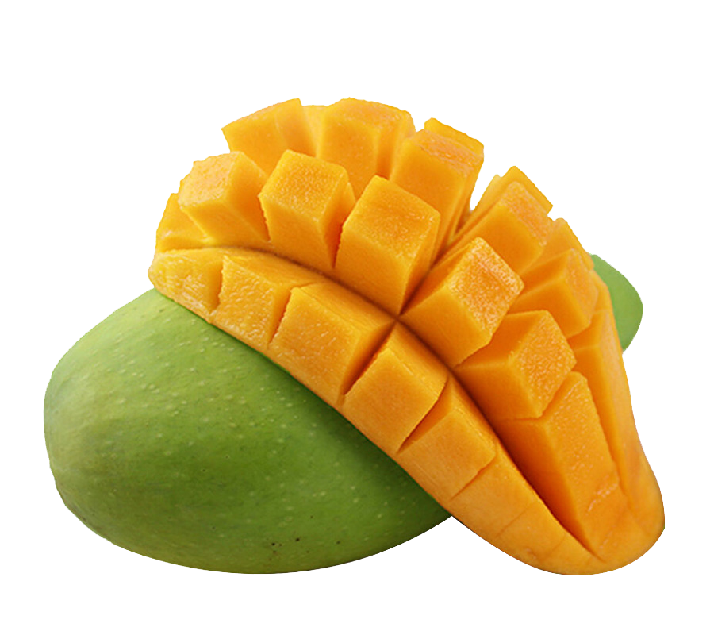

Tentangbuah.com
Mangga

Mangga merupakan pohon yg bisa tumbuh mencapai 20 meter atau bahkan lebih. umumnya mangga yang dibudidayakan hanya memiliki
tinggi 10m atau kurang. Kulit batang mangga coklat kelabu sampai kehitaman. Kulit batang mangga bagian terluar memecah
atau beralur. Pohon mangga bertajuk rimbun dan lebarnya bisa mencapai 10m.
Nama "mangga" berasal dari bahasa Tamil, mankay, yang berarti man "pohon mangga" + kay "buah".Kata ini dibawa ke Eropa oleh orang-orang Portugis
dan diserap menjadi manga (bahasa Portugis),mango (bahasa Spanyol dan Inggris) dan lainnya.
Mangga berasal dari daerah di sekitar perbatasan India dengan Burma, dan mangga telah menyebar ke Asia Tenggara sekurang-kurangnya
semenjak 1500 tahun yang silam. Buah ini dikenal pula dalam berbagai bahasa daerah, seperti pelem atau poh (Jw.).
Khasiat Mangga
- Mencegah jerawat
- Menyehatkan kulit
- Meredakan inflamasi pada kulit
- Mendorong terbentuknya kolagen
- Menghilangkan sel kulit mati
- Mengurangi risiko diabetes
Daftar Harga
| Jenis Mangga | Harga | |
|---|---|---|
| Per Kilo | Per Biji | |
| Mangga Manalagi 1 Kg | 13.450 | |
| Mangga Arumanis 1 Kg | 17.550 | 1.185 |
| Mangga Gedong 100gr | 2.990 | |
| Mangga Gedong Gincu 100gr | 950 | |